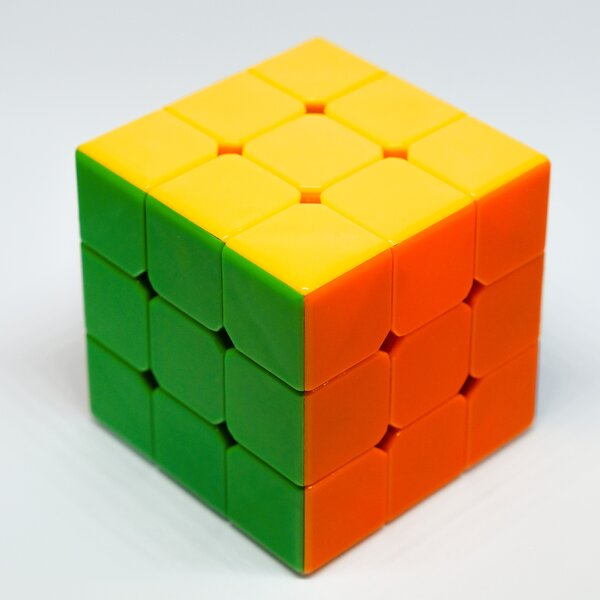
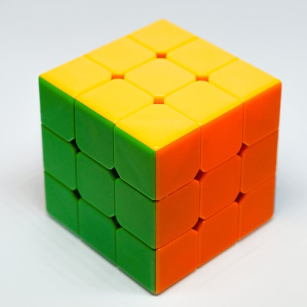

Overview
Purpose
Are you an artist? If so, are you looking for inspiration for your next project? Or are you seeking to inspire someone else? I am working on a website for artists who enjoy inspiring and being inspired. This website will be a place where artists can share their unique ideas with others. Additionally, this website will challenge artists to pursue new ideas and explore new art forms. If you enjoy being creative and inspiring others, we want to hear about your ideas.
Audience
The audience for this website is anyone who likes art. This audience could include art students who are looking for ideas for projects. This website could also be for art teachers looking for new things to teach their students. Professional artists as well as people you like doing art just for fun. People from all ages or backgrounds will use this website. Basically, if you like art and sharing your art with others, this website is for you.
Branding
Website Logo
Style Guide
Color Palette
Palette URL: https://coolors.co/396e94-e7c24f-a43312-381d2a-aabd8c| Primary | Secondary | Accent 1 | Accent 2 |
|---|---|---|---|
| #1b2773 | #faebd7 | #e7a932 | #d64727 |
Typography
Heading Fonts: "Over the Rainbow" and "Arizona"
I chose the "Over The Rainbow" font because it looked fun, artistic, and fit well with my theme of art. I chose Arizona for very sepecific headings because it matches my logo and because it looks artistic as well.
Paragraph Font: Open Sans
I chose this font for the paragraphs because this font is simple and easy to read, and also because it pairs well with the "Over the Rainbow" font.
Normal paragraph example
The best Whitewater Rafting in Colorado, White Water Rafting Company offers rafting on the Colorado and Roaring Fork Rivers in Glenwood Springs. Since 1974, we have been family owned and operated, rafting the Shoshone section of Glenwood Canyon and beyond.
Colored paragraph example
Trips vary from mild and great for families, to trips exclusively for physically fit and experienced rafters. No matter what type of river adventures you are seeking, White Water Rafting Company can make it happen for you.
Navigation
Site Map
Content
Home
Welcome to Medium
A website where artists from everywhere can come together to share ideas. Basically, this is a website where you can post and showcase your very own art for others to see. This is also a website where you can get inspiration for your next project. So have at it. Create. Explore. And have Fun!
Beginner or Professional? It doesn’t Matter!
This website is for everyone who enjoys art. It does not matter how much or how little experience you have. If you are a professional with years of experience or only a beginner who is starting out for the first time, it does not matter. Feel free to showcase your art projects regardless of what previous experience you have. This website is for artists of all ages, types, and backgrounds. Basically, if you are a person and you like art, this website is for you.


Challenge Page
We Challenge you to Create
Looking for inspiration for your next big art project? You’ve come to the right place! For those of you who are looking to be inspired, check out our Challenge page. Here you will find a list of ideas that you can get inspiration from.
Also, have you ever wanted to dare someone to create something? Now is your chance! In addition to giving artist inspiration, the Challenge Page is a place for artists to give inspiration as well. If you are looking for inspiration, come to the challenge page, and we will challenge you to create something spectacular. Also, if you have cool ideas for art projects, let us know.
This is the challenge page. Feel free to Share your ideas about art with other people or get inspiration below.
Challenge List
- Create an outdoor scene using nothing but paint brushes.
- Visit a random park around where you live, and have some else scribble a line on a piece of paper for you. Create a drawing out of the scribble that the other person created.
- How do you feel right now? Create an art piece incorporating your favorite color or any other color you prefer.
About Me
Who am I?
My name is Andrew Stamm, and I am a Computer Science student at BYU - I.
My experience With Art
In all complete honesty I would consider myself to be a beginner at art. I do have a little experience in this field though. In high school, I took an art class where I was exposed to several different forms of art. I always enjoyed working on art projects in school. Anytime I have the opportunity to create something artistic in school or with friends or just fun fun even, I enjoyed it. This is a part of the reason why I like art.
What is My Favorite Medium?
Believe it or not, my favorite art medium to work with is Rubik’s Cubes. Typically, when people think about Rubik’s Cubes, I am willing to guess that making art with them would be the last thing that people would think about. I’ve been creating fun and unique and fun designs with Rubik’s Cubes from the time I was nine years old. Since then, I’ve come up with several different designs/patterns for Rubik’s Cubes and other similar twisting puzzles.
Why Art?
My favorite part about art is creating. I enjoy taking my ideas and creating something fun and exciting out of them. More specifically, I enjoy creating art with a variety of unique mediums, such as Rubik’s Cubes, legos, sand, or even pencils or game board pieces. I enjoy creating art with everyday things that people would not normally consider as mediums for art, and I want to challenge others to enjoy creating as well.
 

Wireframes
Create three wireframes for your site. One for each page and list them here
Home Wire Frame (Wireframe Link)
Challenge Page Wireframe (original) (Wireframe Link)
Challenge Page Wireframe (revised) (Wireframe Link)
About Me Wireframe (Wireframe Link)